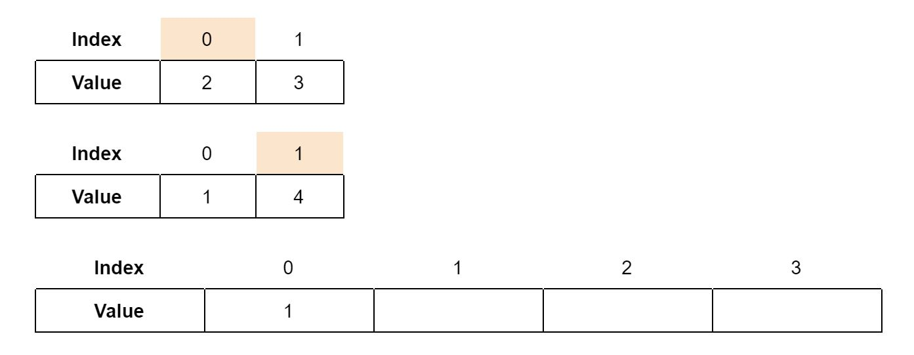

A faster and a more interesting way to sort arrays.
public static int[] mergeSort(int [] array, int leftLimit, int rightLimit) {
//finding the size of the array
int size = rightLimit-leftLimit+1;
int [] sorted = new int [size]; //creating the sorted array, which will be the output.
if (size<=1) { //base case for this recursion: size is less than or equal to 1
if (size==1) { //if the size is 1, get that 1 value
sorted[0] = names[0];
}
return sorted; //return the array
}
//finding the split index, since merge sort splits the array into 2 halves
int splitIndex = leftLimit+size/2;
if (splitIndex==rightLimit) { //if the split index is somehow the right index, then subtract 1 from it so the same array isn't passed onto the next recursion loop
splitIndex--;
}
//find the sorted versions of the halves of the array
int [] leftSorted = mergeSort(array, leftLimit, splitIndex);
int [] rightSorted = mergeSort(array, splitIndex+1, rightLimit);
//merging the two arrays together
int indexLeft = 0; //the pointer of the left array
int indexRight = 0; //the pointer of the right array
int index = 0; //the current index to fill in for the final sorted array
while (indexLeft<leftSorted.length || indexRight<rightSorted.length) { //it continues looping until both pointers reach the ends of their arrays
if (indexLeft==leftSorted.length) { //if the left pointer is already at the end, just add the values on the right pointer
sorted[index] = rightSorted[indexRight];
indexRight++;
}
else if (indexRight==rightSorted.length) { //if the right pointer is already at the end, just add the values on the left pointer
sorted[index] = leftSorted[indexLeft];
indexLeft++;
}
else {
if (leftSorted[indexLeft]<rightSorted[indexRight]) {
sorted[index] = leftSorted[indexLeft];
indexLeft++;
}
else { //otherwise add the right pointer value and move the right pointer
sorted[index] = rightSorted[indexRight];
indexRight++;
}
}
index++; //a value is always added to the final array, so this index is always increased
}
return sorted;
}
Merge sort is a faster way to sort an array, and it has an interesting recursion approach. It works by continually splitting the array in half, sorting the two halves (using recursion), and combining it together again. After the array has been split in half, each half is itself merge-sorted. Since arrays of size 0 or 1 are sorted already (can’t be unsorted if there’s nothing to sort), when a merge sort iteration receives an array of length 0 or 1, the array is immediately returned.
The combining, or merging (hence the name), of the two halves of the array is an interesting process. In the two halves, there are pointers for the current index. Until all the elements have been iterated through, the program repeatedly compares the values at the two indices, adds the smaller value to the final, resulting array, and increments the pointer of the array whose value was selected to be added to the final array. Note that for this to work, both arrays have to be sorted already. Here’s a simple example of the merging, using two arrays of length 2:
At the beginning, both pointers are set to the first indice of their respective arrays. We see that the value in the lower array is smaller than the value in the higher array, so that value gets added to that final array and the pointer for that array is incremented.
Now, we see that the value in the higher array is smaller than the value in the lower array, so that value gets added to that final array and the pointer for that array is incremented.
Now, we see that the value in the higher array is once again smaller than the value in the lower array, so that value gets added to that final array and the pointer for that array is incremented. Since all the elements in the top array have already been added, from now on we will just add elements in the bottom array.
The only number left is 4. We can add that to the final array, and we see that the final array contains all the elements from the smaller arrays, sorted.
The time complexity for this algorithm is about O(N*(log(N))). The log(N) is how many divisions there will be, and each division could possibly take N time to finish sorting.
created with
Nicepage .